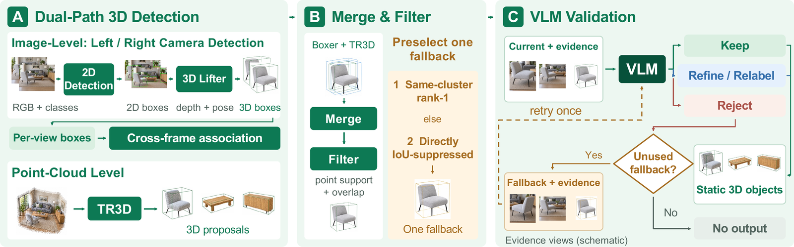
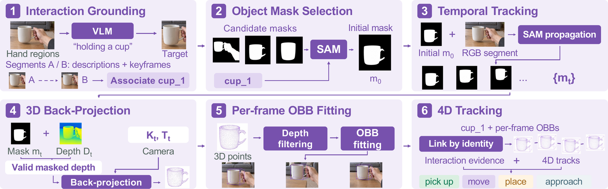
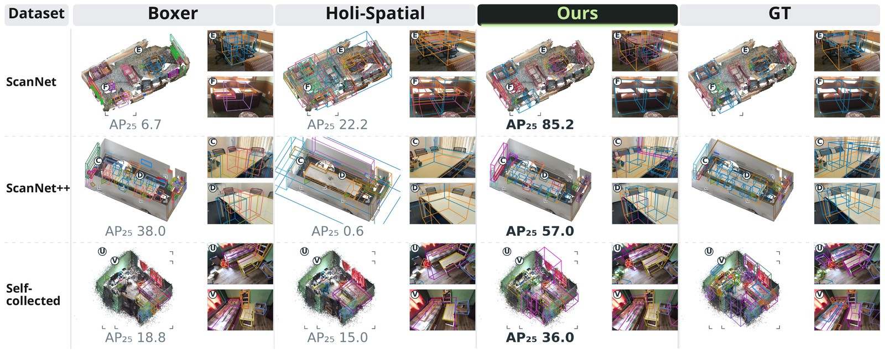
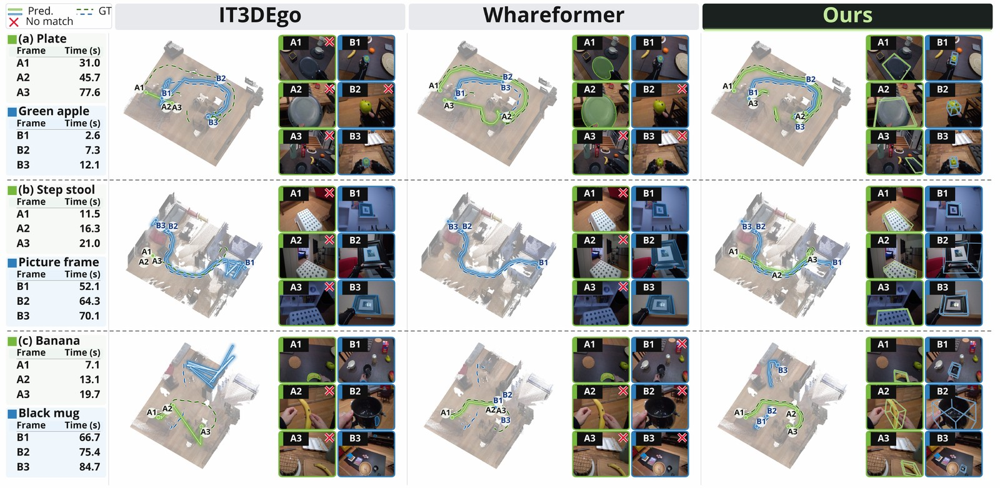
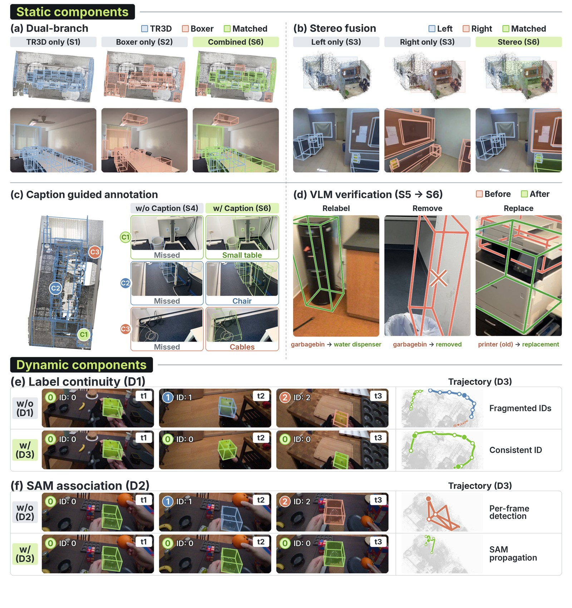

// Paper Video
// Introduction
Holi-World turns egocentric recordings into static 3D objects, dynamic 4D tracks and grounded training data, without manual labels.
The Ecosystem
From experience capture to world intelligence
Five parts, two verification loops.
Ego Capture Device
Stereo RGB + IMU, in the wild
Holi-World-Foundry
Reconstruction · 3D/4D annotation
Holi-World-Data
Geometry · semantics · QA
Holi-World-VL
Spatial-temporal reasoning
Human Annotation
Independent labels
Holi-World-Bench
Reference for both loops
Captured in the wild
Mapping walks record the room. Interaction sessions record the hands at work.
Holi-World-Foundry
An engine that writes world records
Reconstruct once, then split: static objects persist, dynamic objects move.
Stereo RGB + IMU
Geometry & semantic cues
Persistent 3D objects
4D object tracks
Unified world state
Build the world first
Poses, depth and a Gaussian scene, then VLM cues decide which branch each object takes.
Two detectors, one VLM inspector
Real counts from one room:

Same cup, same ID, even after it leaves the view

One record, every label traceable
One office, one coordinate frame:
Holi-World-Data
Four levels of grounded supervision
Every example links back to the objects, times and frames behind it.
Raw data
- Scenes
- ~100
- Ego-videos
- 444
Geometry
- 3DGS scenes
- ~100
- RGB frames
- 1,322K
- Depth maps
- 1,322K
- Camera poses
- 1,322K
Semantics
- 2D boxes
- ~90K
- Static 3D boxes
- 2,466
- Dynamic 4D tracks
- 2,095
Spatial intelligence
- 3D grounding
- ~4K
- Captions
- ~80K
- Static QA
- 13,647
- Dynamic QA
- 64,409
Experiments
Accurate annotations, real learning value
Best AP on all three datasets.
Full table · 9 methods × 3 datasets
| ScanNet | ScanNet++ | Holi-World-Bench | |||||||
|---|---|---|---|---|---|---|---|---|---|
| Method | AP25↑ | AP50↑ | mIoU↑ | AP25↑ | AP50↑ | mIoU↑ | AP25↑ | AP50↑ | mIoU↑ |
| Model-based methods | |||||||||
| SpatialLM | 0.18 | 0.09 | 0.52 | 0.03 | 0.01 | 0.50 | 0.04 | 0.00 | 0.23 |
| LLaVA-3D | 0.02 | 0.00 | 0.34 | 0.00 | 0.00 | 0.34 | 0.00 | 0.00 | 0.00 |
| SceneScript | 0.00 | 0.00 | 0.00 | 0.00 | 0.00 | 0.00 | 0.00 | 0.00 | 0.00 |
| Map-Det3D | 0.40 | 0.12 | 0.48 | 0.18 | 0.05 | 0.48 | 0.12 | 0.01 | 0.37 |
| 3DGS-based methods | |||||||||
| M3-Spatial | 0.00 | 0.00 | 0.37 | 0.00 | 0.00 | 0.60 | 0.06 | 0.00 | 0.28 |
| LangSplat | 0.02 | 0.00 | 0.45 | 0.01 | 0.00 | 0.33 | 0.01 | 0.00 | 0.10 |
| Spatial pipeline frameworks | |||||||||
| Boxer | 0.32 | 0.09 | 0.47 | 0.23 | 0.05 | 0.46 | 0.16 | 0.07 | 0.52 |
| Holi-Spatial | 0.33 | 0.10 | 0.47 | 0.17 | 0.05 | 0.45 | 0.07 | 0.01 | 0.37 |
| Holi-World (Ours) | 0.68 | 0.55 | 0.72 | 0.30 | 0.13 | 0.56 | 0.24 | 0.12 | 0.53 |
[0, 1] scale. AP at 3D IoU 0.25 / 0.50; mIoU over pairs matched at IoU 0.25. best second best.

Baselines get ground-truth help at test time. Foundry gets none, and still leads.
Full table · 5 methods × 12 metrics
| ADT20 | Holi-World-Bench | |||||||||||
|---|---|---|---|---|---|---|---|---|---|---|---|---|
| Bounding box | Trajectory | Bounding box | Trajectory | |||||||||
| Method | IoU↑ | GTC↑ | PP↑ | HOTA↑ | AssA↑ | PCL↑ | IoU↑ | GTC↑ | PP↑ | HOTA↑ | AssA↑ | PCL↑ |
| Instance segmentation and tracking | ||||||||||||
| EgoSeg3D† | – | – | – | 21.89 | 37.11 | 36.47 | – | – | – | 5.76 | 21.78 | 36.84 |
| IT3DEgo* | – | – | – | 36.00 | 53.60 | 34.64 | – | – | – | 2.44 | 4.36 | 7.89 |
| SAM+Whareformer* | – | – | – | 30.76 | 40.99 | 31.26 | – | – | – | 14.63 | 20.97 | 36.84 |
| 3D object perception and tracking | ||||||||||||
| SAM+LMK* | 7.96 | 21.27 | 14.53 | 26.10 | 30.76 | 21.45 | 20.28 | 50.84 | 21.30 | 15.13 | 14.35 | 23.68 |
| Holi-World (Ours) | 30.88 | 43.03 | 56.25 | 54.31 | 71.94 | 47.95 | 41.79 | 53.18 | 76.49 | 43.14 | 56.54 | 57.89 |
% at a 0.1 m trajectory tolerance. *GT first-visible mask initialization; †GT category queries. best second best.

Trained only on Holi-World-Data, a 4B model beats a zero-shot 27B on every metric.
Full table · 3 models × 8 metrics
| Holi-World-Bench | EgoDynamic4D | |||||||
|---|---|---|---|---|---|---|---|---|
| Model | F1↑ | Y/N↑ | MCQ↑ | Num.↑ | F1↑ | Y/N↑ | MCQ↑ | Num.↑ |
| Qwen3.5-4B | 16.35 | 34.86 | 62.00 | 10.80 | 18.29 | 59.47 | 79.16 | 0.02 |
| Qwen3.8-27B | 43.67 | 82.85 | 75.00 | 66.13 | 42.93 | 61.07 | 57.54 | 0.16 |
| Holi-World-VL-4B | 78.02 | 93.52 | 94.00 | 81.84 | 66.39 | 99.67 | 94.92 | 16.33 |
%. F1 is Token F1; Y/N, MCQ and Num. are yes/no, multiple-choice and numerical accuracy. best second best.
Ablations
Each part covers another's blind spot

Citation
BibTeX
@article{holiworld2026,
title = {Holi-World: Building Holistic World Intelligence from Human-Ego Experience},
author = {Li, Hao and Zheng, Xiyuan and Gao, Yuanyuan and Dai, Yalun and Ji, Xinhao and
Chen, Xuan-Li and Zhao, Jing and Hong, Fangzhou and Chen, Zhaoxi and Liu, Ziwei},
journal = {Ropedia Technical Report},
year = {2026}
}